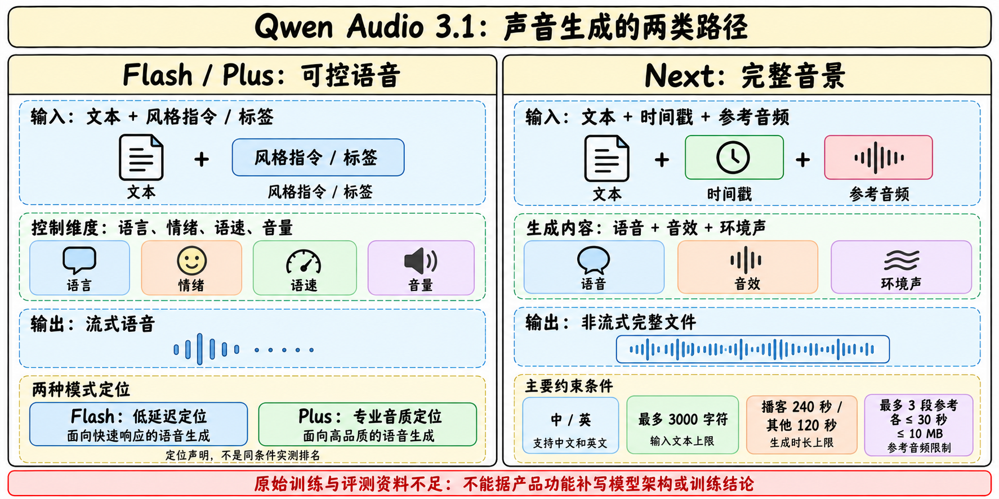
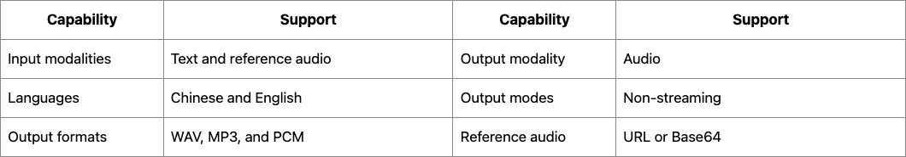

Qwen Audio 3.1 TTS family
日期与family：历史补漏，不把国际区上线算新模型
| 首次发布记录（北京） | 成员 | 定位 | 后续区域记录怎样处理 |
|---|---|---|---|
| 2026-09-18 | qwen-audio-3.1-tts-flash | 低延迟流式语音 | 10/12国际区上线，同SKU，不再算首发 |
| 2026-09-21 | qwen-audio-3.1-tts-next | AudioGen完整音景 | 10/22国际区上线，不另添模型 |
| 2026-10-21 | qwen-audio-3.1-tts-plus | 专业语音、内容制作 | 作为同family新增成员阶段，保留10/21更新 |
本family首日取9/18。发布时间来自官方发布记录中的实际条目，不取网页Updated at、抓取日期或API版本日期。这里是3.1音频产品族，不是Qwen3.1通用语言正代；在Atlas放语音支线。年初开放Qwen3-TTS仍保留自己的卡、报告和节点，不能仅凭相似名字合并成同一权重。

Flash与Plus：控制声音，先固定听什么、如何听
官方对两者共同列出多语言/方言、流式合成、自由形式指令和细粒度标签，标签控制情绪、音调、persona、语速与音量。声线克隆描述强调对参考音频噪声和混响更稳健；这是官方能力声明，尚缺同条件量化对照，不能写成已实测噪声鲁棒性提升多少。
Flash强调语音助手、实时交互和客服的低延迟；Plus强调品牌音色、影视配音、角色演绎和专业作品音质。这是产品取舍的定位，不意味着Flash每项更快或Plus每项更准；没有公布首包延迟、实时率、MOS或跨语言分组误差条。复杂标签也可能增加不稳定性，应用验收要测复合指令和跨段一致性。
| 维度 | Flash | Plus | 当前不能补写的事实 |
|---|---|---|---|
| 输出 | 流式语音 | 流式语音 | 切块大小、声码器/codec结构未知 |
| 控制 | 风格指令与细粒度标签 | 风格指令与细粒度标签 | 指令依从率和冲突标签优先级未列 |
| 克隆 | 官方称抗噪/抗混响改进 | 同类能力描述 | 不证明任意参考音频都可忠实复现 |
| 长度 | 模型页为空白“—” | 模型页为空白“—” | 空白不等于无限输入/输出 |
| 训练/微调 | 产品表不支持服务微调 | 产品表不支持服务微调 | 不等于内部模型没有后训练 |
| 工具/结构化输出 | 未支持 | 未支持 | 声音生成不是独立工具Agent |
Next：不是Flash的高延迟别名
Next接收文本、时间戳与参考音频，在一次生成里组合说话、音效与环境声。核心交付是完整声音场景：播客对话、影视音景、游戏声音等。它当前是非流式输出，不能把Flash/Plus流式属性移植过来，也不能由多说话人生成推断能识别任意输入音频中的说话人。
| Next硬限制 | 官方模型页记录 | 对作品规划的影响 |
|---|---|---|
| 明列语言 | 中文、英文 | 正文说multilingual，但表中只明确这两种；不承诺其它语种 |
| 输入文本 | 最多3000字符 | 先按内容段落切分，跨段声线一致性另验 |
| 时长 | 播客240秒；其它120秒 | 不是任意两分钟内一定满足复杂时间戳 |
| 参考音频 | 最多3段，每段≤30秒、≤10MB | 3段不等于支持任意数量角色 |
| 参考格式 | WAV、MP3、OGG Opus；不支持raw PCM | 输入/输出格式要分开 |
| 输出格式 | WAV、MP3、PCM | 可输出PCM不表示能输入raw PCM |
| 请求方式 | HTTPS，返回完整文件 | 实时助手应单独评估等待与中断策略 |

怎样验收，才能把“好听”变成可复查结论
以下是研究建议，非官方已公开成绩，也非本机实验结果。先固定同一文本、speaker reference、语言、采样/输出格式和服务区域，再做隐藏模型身份的成对试听。分开统计语义正确、漏字/重复、音色相似、韵律自然和情绪标签依从，避免一个综合MOS掩盖重要失败。
实时路径记录首音频包延迟、p50/p95、每秒生成时长、断句边界爆音、网络重连和用户打断；完整音景路径记录时间戳偏差、多角色声线串线、音效遮蔽台词和跨段一致性。噪声参考的对照只改变噪声/混响，保留干净参考基准，不能同时换说话人后宣称鲁棒性提升。
计费也需要统一分母。当前北京列表Flash为输入/输出token计价，Plus按万字符计价，Next输入/输出token分别计价；不同计费单位不能直接比较数字大小。应算每分钟合格音频的端到端成本，包含重生成、失败请求和人工剪辑。
官方来源与资料边界
📊 相关可视化：中文Poster